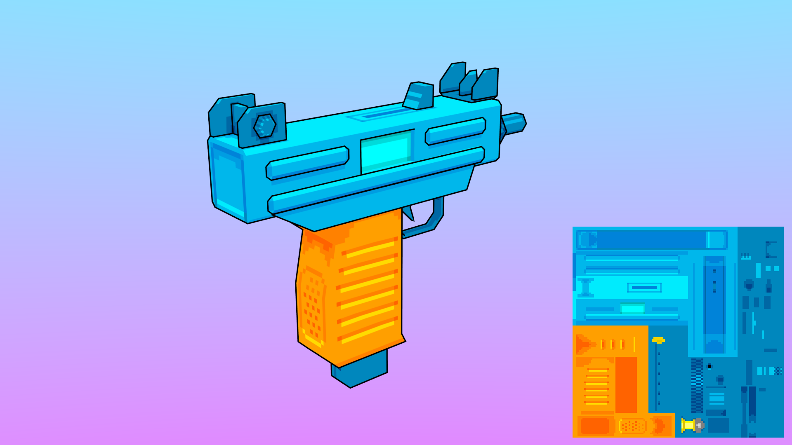
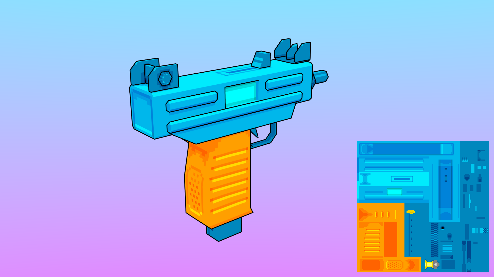

My name is Christopher DeBoy, and I'm an aspiring game developer and graphic designer/artist. I'm most familiar with the Godot Game Engine and its GDScript scripting language, having worked with it for over 8 years and developed quite a few comprehensive systems in it. If you're interested in hiring me, feel free to reach out
Here's a list of languages I'm most familiar with:
- GDScript
- C/C++
- Nim
- Python
- HTML5, CSS3, & JavaScript
Here are some links to my profiles:
Portfolio Sections:
Programming
Godot FPS Controller
This is a first person shooter controller I made in the Godot engine. I got pretty far along and it includes the following features:
- Walking, stair-stepping, crouching, leaning, sprinting, sneaking, jumping, Source Engine-style ladder Sclimbing, and swimming
- Head-bobbing dependent upon speed and ambulation type
- Procedural weapon sway, bobbing, and inertia
- Weapons have procedural vertical and horizongal muzzle climb, recoil, accuracy, and precision settings.
- Bullet spread can be affected by how long you fire. If the barrel overheats, that could permanently affect accuracy and precision.
- Bullets are projectiles that travel through space over time and are affected by gravity. Their trajectory is determined when they're fired.
- Bullets leave material-dependent decals on impact -- wood splinters, metal dents, glass cracks, dirt craters, etc...
- Buttons, dials, doors, and gates are available as interactable elements and can have their inputs and outputs chained together like in the Source Engine.
Mech Controller Demo
This is a mech controller demo I created in the Godot game engine. It is a minimal proof-of-concept and includes the following features:
- Tank reticle to show leg orientation relative to turret orientation
- Aiming is driven by mouse direction, rather than mapped directly to mouse movement.
- movement is relative to leg orientation. Legs are rotated by key inputs.
- Thrusters/jet pack
- Skybox and endless plane visualizer
6DOF Controller Demo
This is a six degrees of freedom (like in the Descent series) controller demo I created in the Godot game engine. It is a minimal proof-of-concept and includes the following features:
- Six degrees of rotation
- Angular inertia
- Movement along all 3 axes relative to orientation
- Networked player controllers
- Skybox
GameBoy Color DVD Screensaver demo
This is a simple demo I made using GBDK to get familiar with the library. It features a DVD Video logo as a metasprite that bounces around the screen and changes color on collision.
GameBoy Roguelike
This is a work-in-progress roguelike I've been working on for the GameBoy in C and GBDK. It's pretty early on, but the basic skeleton of dungeon generation is implemented.


This is an RPN (Reverse Polish Notation) calculator in Nim. It operates with a stack-based language with if/else statements, variables, and function declaration, which should, in theory, make it turing-complete.
N.U.T.E.

The Nim Unstructured/Useless Text Editor. This is a line text editor I made as an exercise to learn Nim and make use of its built in types. It stores a document line by line in an AVL tree, and it makes editing the text document much like entering a program into an 80's microcomputer. To enter text, you type the number for its line, followed by a space, and then the text you wish to enter. If there's a line number collision, it replaces the old line, but if not, it's entered into the AVL tree, which then self-balances.

This is the Atlas Window Manager. AtlasWM aims to be a lightweight, but featureful, and user-friendly window manager for X11, based on Joe's Window Manager (JWM), that only uses permissively-licensed code and libraries, as it will be the default window manager for AcephalOS and eventually PrometheusOS.
Currently, I've replaced Cairo/libRSVG with PlugoSVG, and have enhanced the customizability of the motif theme to enable greater readability, and am currently working on replacing Pango/XFT with libSchrift. I intend to extend its features, with some of the main ones being tababble w left: 50%;
transform: translate(-50%, 0%);indows, like in Haiku or FluxBox, and a global menu panel item.
AtlasWM is currently in alpha stages, and most planned features are not yet implemented. Many things are likely subject to change, so it is not recommended for daily use.
Graphic Design

This is the typeface used throughout this document. Liver is a public-domain sans-serif font in the style of Goma/Shin-Go/Rodin/Saira, modeled with screens in mind.
Comes in regular and mono variants. Bold variant in the works.
Logos
AcephalOS logo
Logo I made for a FreeBSD-based OS I am working on.

San Bernardino Operation logo
Logo I made for the organization to work on AcephalOS.
ioRTCW

Old ioQuake3 logo
The Gore Effect Facebook logo
In addition to the above logos, all other logos on this page were designed by myself.
3D Art & Animation
Some 3D models I've worked on, some of which are animated. This is an incomplete list.


 
